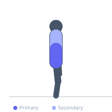

Exercise guide / Thoracic Extension over Foam Roller
Thoracic Extension over Foam Roller
Thoracic extension over a foam roller is a passive mobilization technique for improving thoracic spine extension range of motion. The foam roller is placed horizontally across the mid-back, and the person drapes the thoracic spine over it into extension, targeting stiffness from prolonged sitting, upper crossed syndrome, and thoracic kyphosis. It is used in posture correction programs, shoulder rehabilitation, and as a preparatory drill before overhead pressing.
Primary muscles
erector spinae
Secondary muscles
pectoralis major sternal
Stabilizers
rectus abdominis
Equipment
Pull-Up Bar (Doorframe)


Starting position
- Place the foam roller horizontally on the floor. Sit in front of it and gently recline so the roller sits across the mid-thoracic spine (between the shoulder blades, approximately T4–T8).
Setup
- Use a full-length foam roller. Support the head with the hands clasped behind it.
Steps
- Step 1: Sit on the floor in front of the foam roller with knees bent and feet flat.
- Step 2: Recline so the foam roller contacts the mid-thoracic spine between the shoulder blades.
- Step 3: Support the head by interlacing the fingers behind it. Keep the elbows wide.
- Step 4: Gently drape the upper back over the roller, allowing thoracic extension. Hold 5–10 seconds.
- Step 5: Use the feet to shift the roller up or down one vertebral segment and repeat, working from the lower to upper thoracic spine.
Coaching cues
- Let gravity do the work — just breathe and relax
- Keep the roller between your shoulder blades, not in your lower back
- Exhale and let the chest open toward the ceiling
Breathing
- Take a deep inhale, then exhale fully, relaxing into extension on the exhale.
Range of motion
- Allow the thoracic spine to extend over the roller as far as the stiffness allows. Do not force end-range.
Tempo
- Hold 5–10 seconds at each segment. Spend 60–90 seconds total on the thoracic spine per session.
Common mistakes
- Placing the roller on the lumbar spine — keep it on the thoracic spine only (between the shoulder blades)
- Pulling the head forward with the hands rather than supporting it
- Forcing the extension aggressively — allow gravity to produce the mobilization
Safety
- Do not use on the lumbar spine
- If sharp pain occurs in the spine, stop immediately — this indicates possible facet joint issue
- Osteoporosis patients should consult a clinician before performing spinal extension drills
Training
- mobility: 1–3 reps
- mobility: 1–2 sets
- Rest: {'mobility': 15}